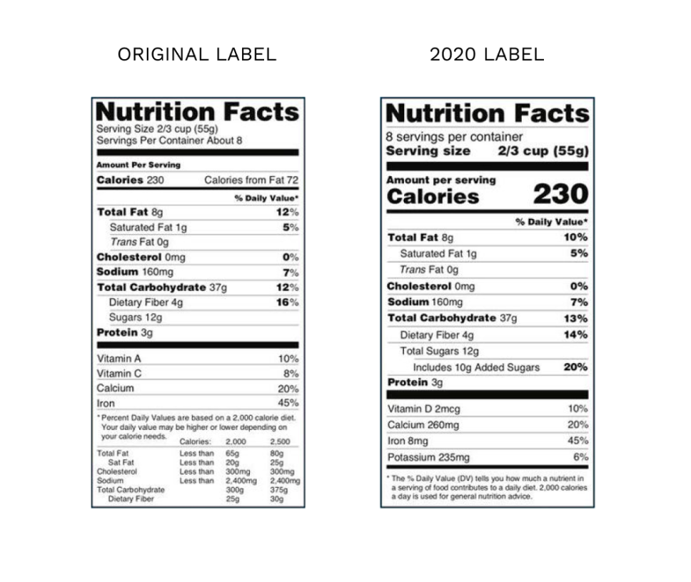
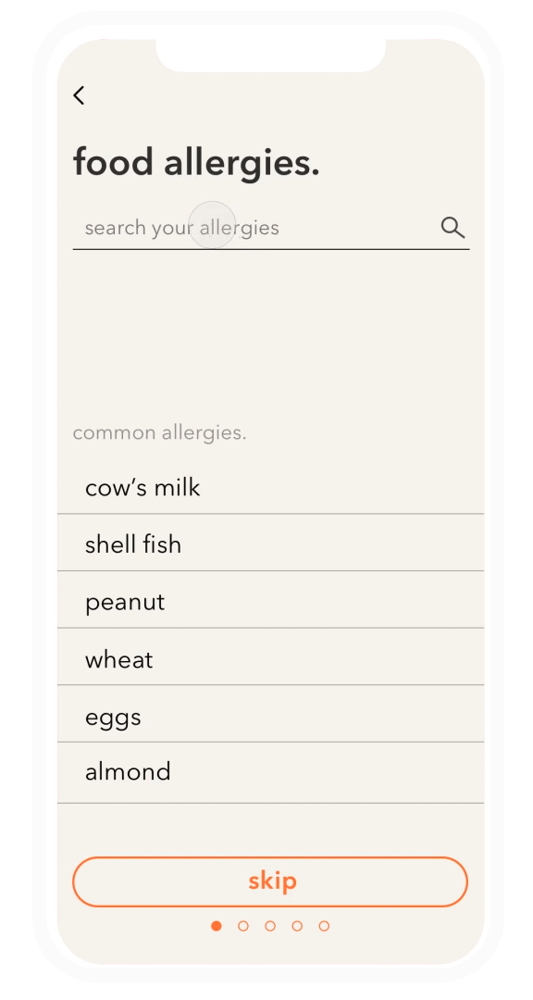
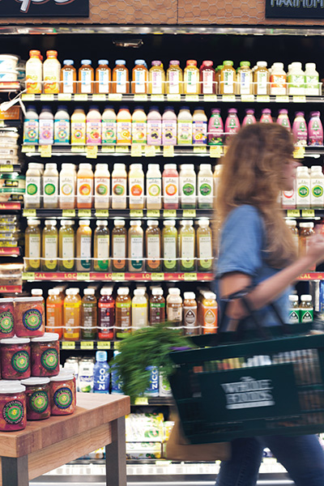
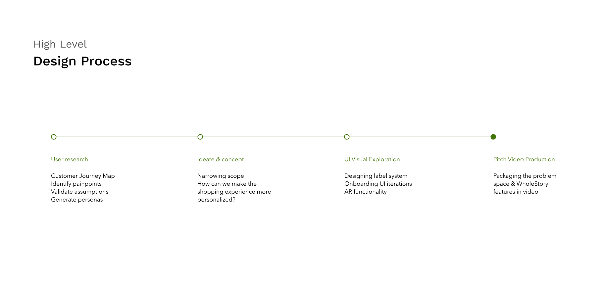
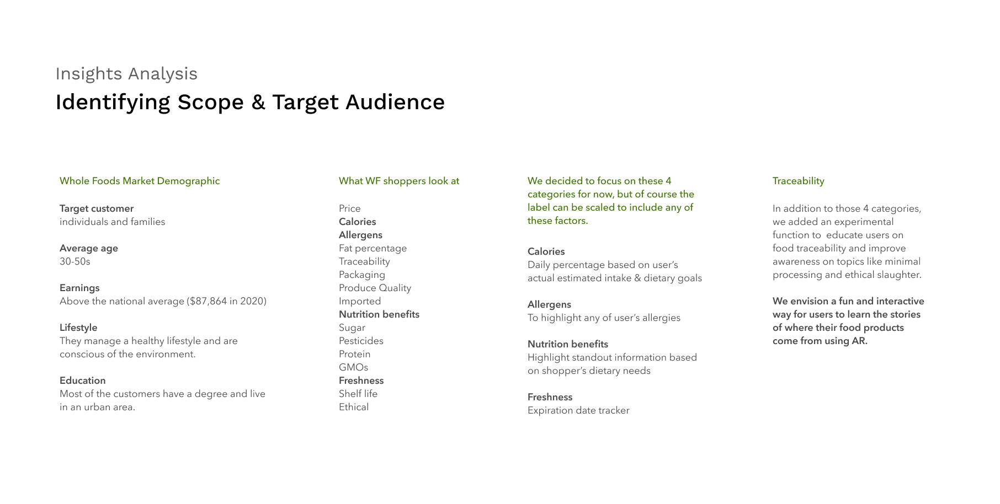
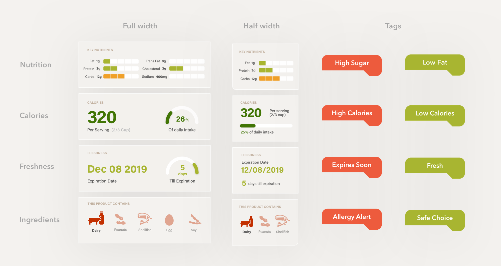
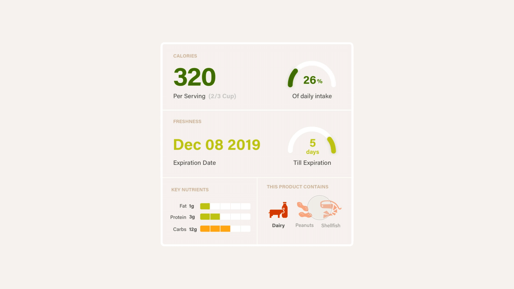

People’s food choices can vary based on allergies, dietary restrictions, body types, dietary goals, etc.
As the primary touchpoint of information, nutrition labels could be personalized to help shoppers make more informed grocery decisions suitable to their dietary needs. While thinking of how can we reinvent the nutrition label, we decided to explore using AR as a scalable way to alter the shopping experience. In this way, we could also inform shoppers on food traceability and help them make decisions when it comes to oversaturated products.
Team Members
Ethan Ye
Sherry Wu
Supawat Vitoorapakorn
My Roles
Onboarding UI
AR Label Design
Video
Tools
Sketch
Principle
After Effects
Spark
Timeline
Oct-Nov 2019
Painpoint 01
Standardized labels are impersonal
Nutrition labels haven't seen much visual change since their conception in 1994. While the content has changed slightly over the years, the standardized label is still only representative of the intake of a so-called average individual with a “2,000 calorie diet”. Except that most people don’t actually abide by this standard 2,000 calorie diet.

our solution
Scalable & flexible label design
We created an onboarding experience that would take in data about a user’s allergies, dietary goals, restrictions, etc. to generate personalized food labels. The user can then drag and modify their label to their liking.
By making our label design customizable, we can scale for additional shopper habits and priorities as more reserach is gathered in finding an optiminal grocery shopping experience. The label can always be built to the user’s priorities as long as we can provide the components.

paintpoint 02
Comparing Products
We found the time spent comparing multiple products to be another major painpoint: With the growing number of consumer products and brands available, shoppers easily feel overwhelmed and spend way longer than intended reading each label before carefully choosing to buy one brand of a product over another.
Along with the oversaturation of products, there's also challenges that can come if they have specific dietary needs, allergies, etc.

our solution
Pin & compare products based on your needs
We found that what information shoppers prioritize in making their product comparison choices varied based on the shopper’s personal needs. For example, some shoppers had a more price oriented mindset, while some focused on product quality and ingredients.
Utilizing AR to make it easy to compare between two different products with information prioritized to the user’s specific needs. Like the labels, the compare view will be arranged based on what the user had input in the onboarding process.
00
Design Process
The process is never truly this linear or clean, but the following is a breakdown of the main phases in this project. Please note that within each section there was a lot of iteration and going back and forth as iterations inform other iterations.

01
User research
Through interviewing and surveying a sample population, we were able to identify the painpoints of the current consumer grocery experience and validate our problem space.
02
Identifying scope & target audience
For the sake of limited time on the project, we decided to narrow down our scope and focus on a few notable label attributes that Whole Foods shoppers in particular would prioritize.
Through our research we found Whole Foods shoppers to be more conscientious and selective of their food choices which falls in line with the Whole Foods target demographic.

03
Label Design system
From ideation, we moved into the design phase where we developed a label system that would be adaptable for the personalized nutrition labels that would be custom to each user. We then added in the other features like the onboarding process and product comparison.


04
showing a product’s origin story through ar
Our teammate Supawat created functioning AR models to show food traceability when the app camera is placed on a given Whole Foods product. The user would then be able to see an augmented reality view of how the product came to be on this grocery shelf. Besides traceability, AR would also be used to project users' personalized nutrition labels over the food products.